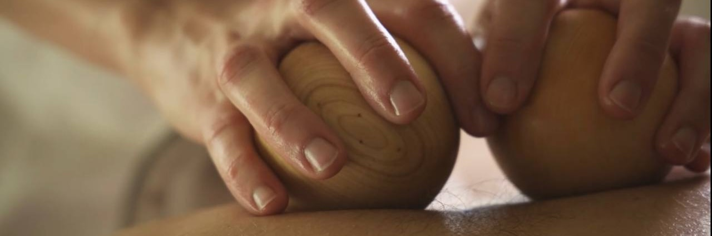
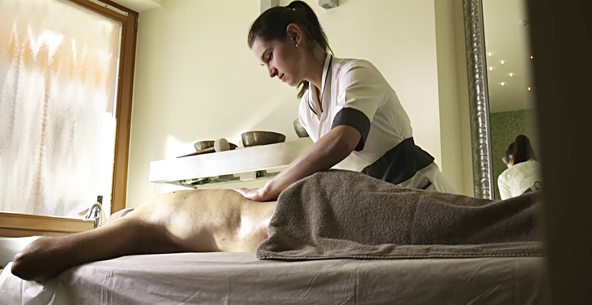

Offro massaggi personalizzati che promuovono il benessere fisico e mentale, garantendo un'esperienza
unica in un ambiente sicuro e accogliente
I Miei Massaggi
Offro massaggi personalizzati per il rilassamento, il recupero fisico e il benessere generale. Ogni
trattamento è pensato per rispondere alle esigenze specifiche dei clienti, combinando tecniche diverse per
garantire qualità e risultati.
Il massaggio rilassante ha una leggera pressione e delle manualità calde e avvolgenti. Mira
principalmente al miglioramento dello stato di benessere della persona. Stimola la produzione di
endorfine migliorando la qualità del sonno, la memoria e la concentrazione.
Il massaggio svedese si caratterizza per l'esecuzione di differenti ma ben precise manipolazioni
(sfioramenti, sfregamenti, impastamenti, frizioni, percussioni) di intensità più o meno elevata.
Generalmente, è prevista la manipolazione dell'intero corpo ma, a seconda delle esigenze, è
possibile manipolare anche solo una o alcune aree.
Il massaggio decontratturante è mirato a sciogliere le contratture muscolari che si formano a
causa di tensioni, posture scorrette o stress. Questo tipo di massaggio lavora in profondità per
rilassare i muscoli, alleviare il dolore e migliorare la mobilità. È indicato per chi soffre di
dolori muscolari dovuti a uno stile di vita sedentario o a sforzi specifici, anche senza essere
uno sportivo.
Il massaggio sportivo, invece, è pensato per chi pratica sport, sia a livello professionale che
amatoriale. Può essere eseguito prima dell'attività fisica, per riscaldare i muscoli e
prepararli allo sforzo, oppure dopo, per favorire il recupero, ridurre la rigidità e prevenire
gli infortuni. Questo massaggio combina diverse tecniche (come lo stretching e le percussioni)
per migliorare l'elasticità muscolare, prevenire crampi e migliorare le performance.
Il massaggio drenante è una tecnica studiata per ridurre la ritenzione idrica, attenua il
gonfiore e la sensazione di pesantezza nelle gambe. Favorisce l'eliminazione delle tossine
accumulate, migliorando la naturale purificazione dell'organismo. Stimola il ritorno venoso e la
circolazione linfatica, aiuta a ridurre la comparsa della cellulite e a migliorare l'elasticità
della pelle.
Il massaggio maternity, eseguibile dal secondo trimestre di gravidanza, è un momento in cui la
mamma può ricevere una coccola che rilasserà non solo lei ma anche il bimbo che porta in grembo.
Questo speciale massaggio riduce stress, ansia e insonnia, allevia tensioni e dolori muscolari,
riduce il gonfiore delle gambe e piedi donando una sensazione di leggerezza immediata. Le dolci
e avvolgenti manovre stimolano la produzione di endorfine, riducono il mal di testa, migliorano
la circolazione sanguigna e linfatica, preparando allo stesso tempo la muscolatura al parto.

Chi sono
La mia passione per il benessere mi ha portato a qualificarmi come Estetista e Tecnica dei
Trattamenti Estetici, con una specializzazione nel settore Termale.
La mia passione per il benessere mi ha portato a perfezionarmi in oltre 20 tecniche di massaggio.
Offro
trattamenti personalizzati, mirati al relax e al miglioramento del benessere psicofisico.

Il Mio Approccio al Benessere
Il mio obiettivo è portare benessere e relax attraverso un servizio professionale e personalizzato.
Dedico attenzione alle esigenze di ogni cliente con un colloquio iniziale, per scegliere la tecnica
più adatta e garantire un trattamento efficace. Unendo empatia e professionalità, creo un ambiente
rilassante e curato, offrendo flessibilità nelle location per un servizio comodo e di alta qualità.
Collaboriamo per il Benessere
Sono sempre aperta a nuove collaborazioni con centri fitness, palestre, spa e professionisti del
settore wellness.
Insieme possiamo offrire ai clienti un'esperienza completa, combinando trattamenti
personalizzati e tecniche di alta qualità per migliorare il loro benessere. Contattami per discutere
le tue esigenze e creare un progetto su misura.